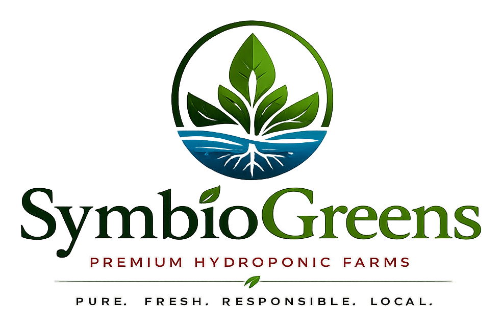
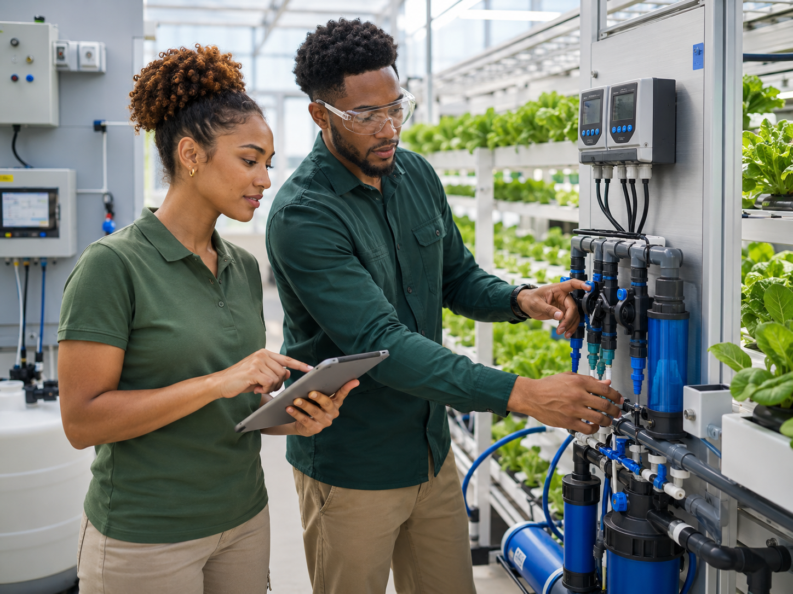
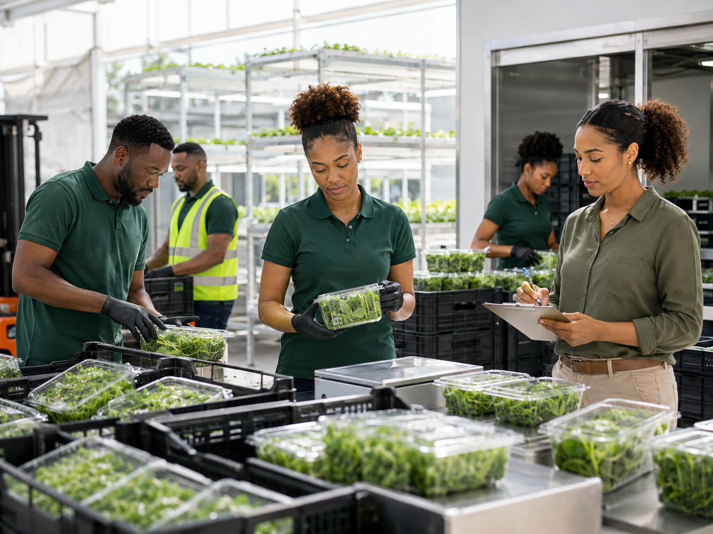
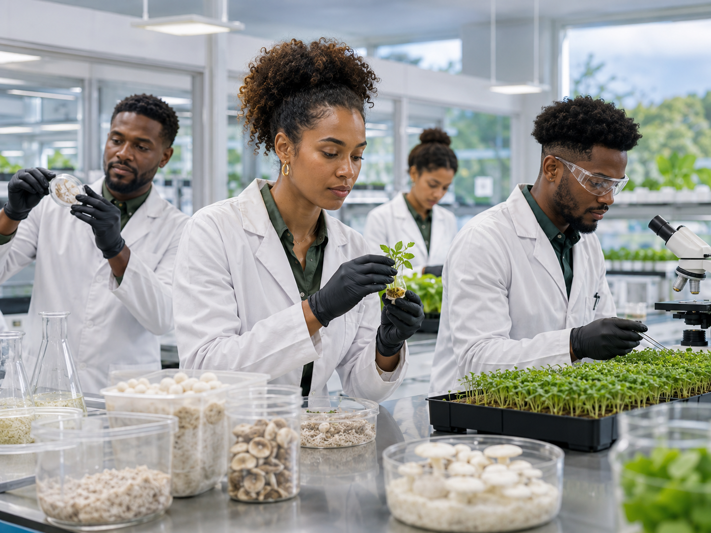

Production Discipline
We value consistency, cleanliness, process control, and measurable results.

SymbioGreens is building a new model for premium, resilient, technology-enabled food production. We are looking for people who want to grow with us - in the field, in the lab, in operations, in business development, and in leadership.
SymbioGreens combines hydroponic production, controlled-environment agriculture, premium crops, technical training, logistics, and market development into one integrated agro-industrial platform. Our goal is to create reliable local production systems for hotels, restaurants, supermarkets, institutions, and regional markets.
As we grow, we will need disciplined operators, agronomists, engineers, technicians, executives, sales professionals, logistics coordinators, quality-control specialists, and people who understand both agriculture and business execution.
We value consistency, cleanliness, process control, and measurable results.
Our farms depend on strong agronomy, water management, automation, data, and system reliability.
We are working to reduce import dependency and strengthen regional food security.
We want people who can grow with the company as we expand across crops, farms, and markets.
Whether your background is technical, agricultural, commercial, operational, or administrative, SymbioGreens is interested in building a strong team for the future.



We are looking for candidates who are serious, disciplined, reliable, curious, and willing to learn. Experience in agriculture, food production, engineering, logistics, hospitality supply, sales, finance, or operations is valuable - but attitude, consistency, and execution matter just as much.
Tell us about your background and the type of role you are interested in. If there is no current opening that matches your profile, we may keep your information for future opportunities.
SymbioGreens is building more than farms. We are building a platform for resilient, high-quality food production in the Caribbean. If you believe your skills can contribute to that mission, we want to hear from you.
Submit Your Profile